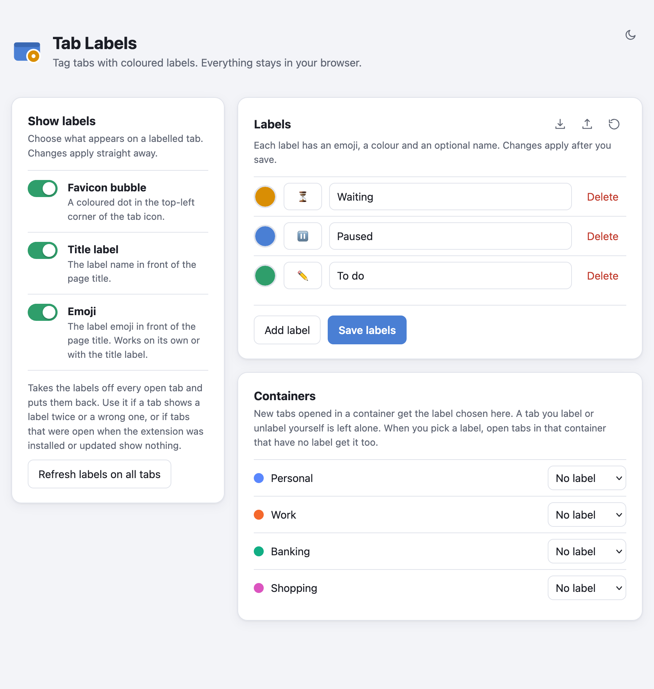
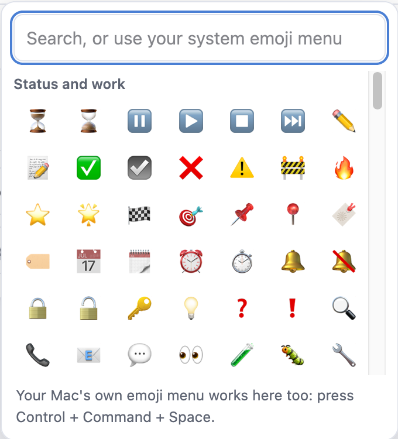

What it looks like
What it does
- Label a tab in two clicks. Right-click a tab, choose Label tab, pick a label. Choose Remove label to clear it.
- Three labels to start with: Waiting, Paused and To do. Add your own, each with an emoji, a colour and an optional name.
- Show it the way you like. Three separate switches: a coloured dot on the tab icon, the label name in the title, and the emoji in the title. Any combination works.
- Containers. Give a container a label, and every new tab opened in it gets that label automatically. It works well alongside Container Bookmarks, a separate add-on that opens bookmarks in a container of your choice: a bookmark opens in its container and, once you have picked a label for that container, arrives already labelled. Tab Labels is not affiliated with Container Bookmarks.
- An emoji picker with search. Your computer's own emoji menu works in its search box too.
- Move your labels around. Export your labels to a file and import them on another computer.
- Labels stay put. A tab keeps its label while you browse, and after Firefox restarts if Firefox restores your tabs.
- One button to tidy up. Refresh labels on all tabs takes the labels off every open tab and puts them back.
The settings page
Open it from the add-on's page in Firefox, or from Tab Labels settings at the bottom of the Label tab menu. Your labels come first. The switches for how labels look are in the sidebar, and the small icons at the top right of the Labels card import, export and reset your labels.


Privacy
Tab Labels collects no data. It has no accounts, no analytics and no server. Your labels and settings are saved in your own browser and go nowhere else.
The extension only reads and changes two things on a page: its title and its icon. It does not read what is on the page.
It makes one kind of network request. When the coloured dot is switched on, then for a tab that has a label it fetches that page's own icon from the same website, so it can draw the dot on it. Nothing else is requested, and nothing is sent about you.
Why it asks for these permissions
| Access to all websites | To change the tab title and icon on any page you label. |
|---|---|
menus | To add Label tab to the tab's right-click menu. |
tabs | To find your open tabs and tell them to update. |
storage | To save your labels and settings in the browser. |
sessions | To remember each tab's label, including after Firefox restarts. |
contextualIdentities | To list your containers, so each can have a label. |
cookies | Only so Firefox tells the extension which container a tab belongs to. The extension does not read or change any cookie. |
scripting | To add the label code to tabs that were already open when the extension was installed or updated (the Refresh button). |
Get Tab Labels
Tab Labels needs Firefox 140 or newer on a computer. It is not made for Firefox on Android.
- Open the Releases page on GitHub and choose the newest release named Tab Labels for Firefox.
- Download the file that ends in
.xpi. Mozilla has signed it, so Firefox accepts it. - Drag the file onto a Firefox window and confirm the permissions.
To update, download the newest .xpi and open it the same way. A Chrome version of the extension is on the same Releases page.